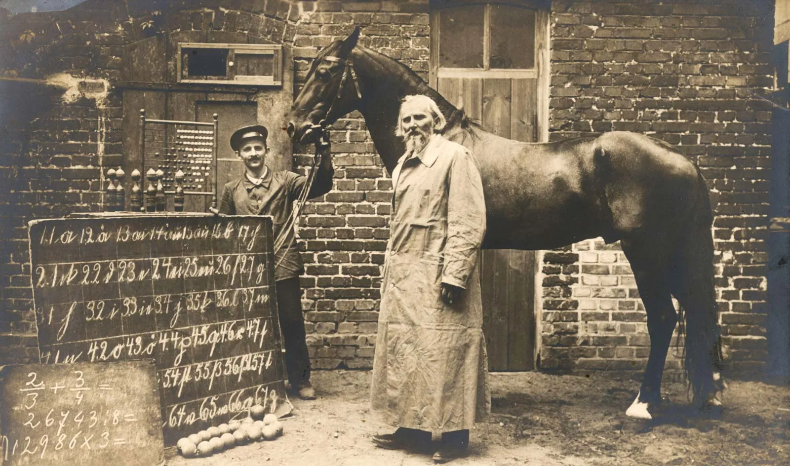

From the perspective of Wendy Chun and Kate Crawford, humans and machines have a relation unfair because humans allow personal opinions to influence their judgment. Every individual has assumptions associated with race, society, or machines. Humans are the middle point to constructing AI a with all these axioms, systems recognitions are amplifying discrimination because of human bias.
Story of Clever Hans.